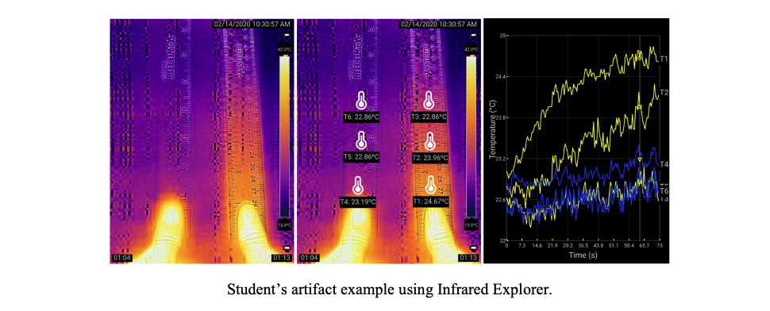

Research Projects
FAccT in Education
AI Recomender for Flamingo
AI Cyberinfrastructure
Learning Analytics for Engineering Design
LogicDS
LPK12
Project SPACE
Infrared Explorer
Infrared Explorer
This project is in collaboration with Institute of Future Intelligence with support from the NSF AISL program. Heat and temperature are closely related to daily life, upon which concepts and principles of thermodynamics are the foundation for the natural sciences of physics, chemistry, and biology. However, physics of heat have been identified as a notoriously difficult concept that confuse students. This project focuses on the design and development of a mobile app, Infrared Explorer (IE), to better support students’ learning with thermodynamics. IE organically integrated physical experiments and virtual tools and utilized thermal imaging powered by FLIR ONE Pro thermal camera and its software development kit (SDK). This thermal camera provides images rendered with color heatmap to serve as direct indicators on temperature differences. Meanwhile, IE was developed with a series of tools (e.g., thermometer reading, real-time graphing, recording, etc.) to support students’ scientific inquiry either by following our expert-designed curriculum or conducting their own experiments.


Relevant publications
Two papers are currently under review at computers & education and Education and Information Technologies.